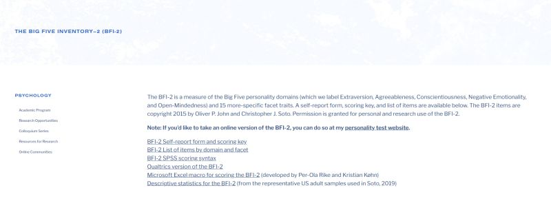

August 6th, 2026
I'm halfway through a research study on financial misinformation in India, and it's made me realize how little we actually know about who falls for it.
Most research on misinformation stops at identifying false posts. It tells you what's wrong, but not who's susceptible to it. I wanted to flip that and ask the second half: what individual traits predict whether someone shares misinformation they've encountered?
So I'm pairing personality data with the content.
On the personality side, I'm using the BFI-2-XS, a 15-item version of the Big Five Inventory (Soto and John, 2017) measuring extraversion, agreeableness, conscientiousness, negative emotionality, and open-mindedness (thanks Colby College for the form!).
Alongside that, I'm using Przybylski et al.'s Fear of Missing Out scale, a 10-item measure of how much someone worries others are having experiences they're missing. Developed at the University of Oxford, published 2013 in Computers in Human Behavior, it's an established, validated instrument, not something I wrote myself, which matters when you're trying to say something real about who shares what.
On the content side, I'm running actual financial misinformation posts from Indian social media through two NLP models: MuRIL, which Google built specifically for Indian languages including Hindi–English code-mixed text, and XLM-RoBERTa, Meta's more general multilingual model trained across 100 languages. Most models are trained on English-dominant web text and fall apart on the way Indians actually write online, mixing Hindi and English in the same sentence. Comparing the two tells me whether India-specific pretraining earns its keep.
I'm doing this under a professor at the Indian School of Business, and we're targeting around 300 respondents for a mixed-effects model in R.
The part I keep turning over is conscientiousness. The obvious prediction is that conscientious people, careful, organized, rule-following, should be less likely to spread something false. But financial misinformation in India shows up dressed in way more ways than just as an 'opportunity'. It shows up as a warning: your bank account will be frozen, RBI just changed this rule, act now. A conscientious person's instinct is to protect the people around them, and that same instinct might be exactly what makes them forward the warning without checking it first. If that holds, "slow down and verify" is aimed at the wrong lever for a chunk of the people spreading this stuff. You're not fighting carelessness. You're fighting a sense of duty. That's the hypothesis I want the data to either confirm or kill.
Data collection is slow. Most people don't want to sit through a survey that asks them to read misinformation and rate their own personality. But what's coming back so far is cleaner than I expected.
If you work in fintech, or you're into financial markets in general, I'd love to talk! Drop me a message.

The BFI-2 personality inventory, from Colby College.